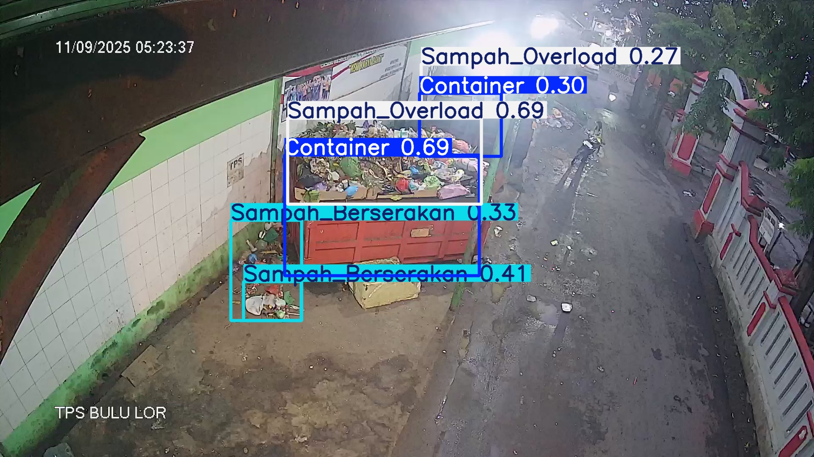

满溢风险
公开结果：Sampah_Overload 0.69
69%
固定投放点容器上方垃圾已明显高出箱体，叠加模拟桶内高度 88%。
建议派发清运工单，并将该点位加入今日优先清运列表。
用公开固定点位截图展示真实识别结果；现场称重、开盖、清运计划等信号为模拟联动，用来说明客户系统接入后的业务闭环。
当前样例来自 Semarang PantauSemar 固定点位公开页面。页面中的识别框来自其公开结果截图，非人工绘制；模拟信号只用于展示联动流程。

结合真实识别结果和模拟现场信号，当前点位建议生成“清运优先 + 保洁复核”两类任务。客户真实部署时，信号来自摄像头、称重/液位、开盖记录、清运计划和用户投放记录。